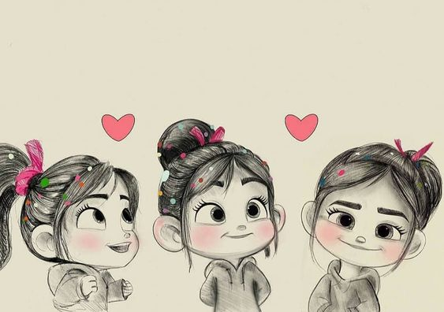
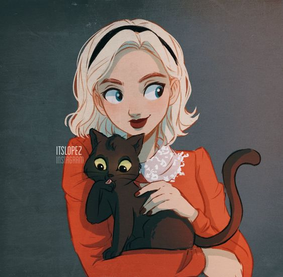
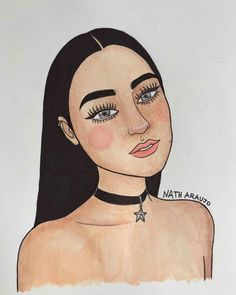
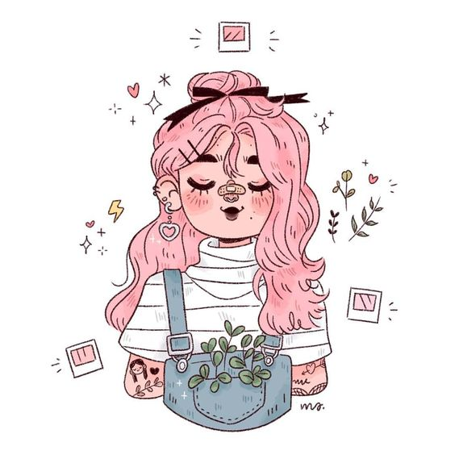
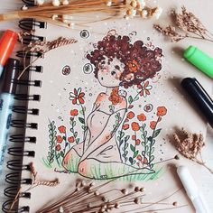
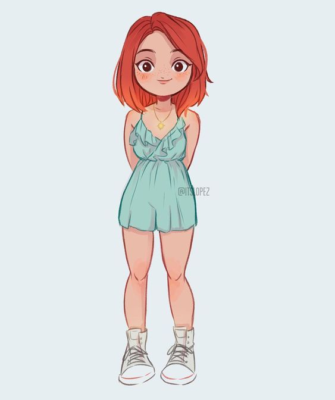

Meus desenhos favorito,que fizeram história em meu ramo de criação
Esse desenho me lembra a minha infancia,e me tras a criatividade de desenhos megos
Esse desenho me inspirara a criação de imaginação ao alto de minhas imaginações.Eu sempre digo "Minha mente tem um universo grande,que vocês nem imagina como ele é", eu digo pois minha mente e imaginações voam longe
Esse desenho é o meu favorito, é de uma serie que eu gosto muito chamada "O mundo sombrio de sabrina", é incrivel pois me vem muitas imaginações e criações de mágia.
Esse desenho é de uma ilustradora que eu adoro muito os desenhos e contéudos dela, ela se chama "Nathi Araujo",apartir que assistir e companhhei os trabalhos dela, me veio mais força de vontade de correr atrás dos meus sonhos.
Esse desenho é de uma ilustradora muito criativa, e os desenhos dela me trás o sentido de paz e aquele ar de desenhos leves e que tenham um sentimento nele. O nome dela é "Lulloca".
Esse desenho é da incrivel ilustradora "Lulloca", com um simples desenho nos trasmite um ar de paz.
Esse desenho umas das formas que eu mais gosto de desenhar,que com poucas cores nos mostra a beleza do desenho.
Esse desenho me traz a inspiração de delicadeza em meus desenhos, adoro demais esse desenho.
Esse desenho me inspira a desenhar com um olhar apaixaonado e fofo em desenhos romanticos que ja desenhei.